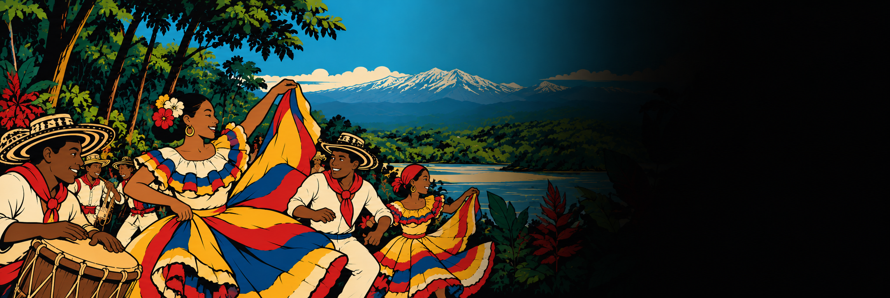

Un recorrido por los imaginarios con los que se cuenta la cumbia —el origen único, la madre de ritmos, la mezcla de tres raíces— y por su lugar en el Carnaval de Barranquilla, a partir del trabajo de campo con la comparsa La Puntica No Má’.
A journey through the imaginaries used to tell the story of cumbia —the single origin, the mother of rhythms, the blend of three roots— and its place in the Barranquilla Carnival, based on fieldwork with the comparsa La Puntica No Má’.
Ein Streifzug durch die Vorstellungen, mit denen die Geschichte der Cumbia erzählt wird – der eine Ursprung, die Mutter der Rhythmen, die Mischung dreier Wurzeln – und durch ihren Platz im Karneval von Barranquilla, ausgehend von der Feldforschung mit der Comparsa La Puntica No Má’.
Ruta de la cumbia — basado en la tesis de maestría «Between millo and picó» (Universität Würzburg, 2024)The Cumbia Route — based on the master’s thesis “Between millo and picó” (Universität Würzburg, 2024)Die Route der Cumbia — nach der Masterarbeit „Between millo and picó“ (Universität Würzburg, 2024)
La cumbia es reconocida como una de las prácticas musicales más importantes de América Latina. Se le atribuye un origen en el Caribe colombiano, desde donde se extendió por el continente y se transformó y adaptó en cada país. Pero ¿qué es exactamente la cumbia? Hasta bien entrado el siglo XX, casi cualquier música de la Costa podía llamarse cumbia, porro o simplemente «aires costeños», y hasta 1960 no estaba claro si se trataba de un género, de un patrón rítmico, de una danza o de todo a la vez.
Cumbia is recognised as one of the most important musical practices in Latin America. It is said to have originated in the Colombian Caribbean, from where it spread across the continent and was transformed and adapted in each country. But what exactly is cumbia? Until well into the 20th century, almost any music from the Coast could be called cumbia, porro or simply “aires costeños”, and until 1960 it was not clear whether it was a genre, a rhythmic pattern, a dance or all of these at once.
Die Cumbia gilt als eine der wichtigsten musikalischen Praktiken Lateinamerikas. Ihr Ursprung wird in der kolumbianischen Karibik verortet, von wo aus sie sich über den Kontinent verbreitete und in jedem Land verwandelte und anpasste. Doch was genau ist Cumbia? Bis weit ins 20. Jahrhundert konnte fast jede Musik der Küste Cumbia, Porro oder einfach „Aires costeños“ heißen, und bis 1960 war unklar, ob es sich um ein Genre, ein rhythmisches Muster, einen Tanz oder alles zugleich handelte.
Por eso el musicólogo Juan Sebastián Ochoa propone entenderla como un concepto: una construcción social que no es una entidad por descubrir, sino una creación humana en permanente transformación y negociación. Este especial sigue esa pista. Recorre los tres imaginarios con los que suele contarse la historia de la cumbia y baja luego a la calle, al Carnaval de Barranquilla, donde una comparsa la baila cada año.
That is why the musicologist Juan Sebastián Ochoa proposes understanding it as a concept: a social construction that is not an entity to be discovered, but a human creation in permanent transformation and negotiation. This special follows that lead. It travels through the three imaginaries usually used to tell the story of cumbia and then goes down to the street, to the Barranquilla Carnival, where a comparsa dances it every year.
Deshalb schlägt der Musikwissenschaftler Juan Sebastián Ochoa vor, sie als Konzept zu verstehen: als soziale Konstruktion, die keine zu entdeckende Wesenheit ist, sondern eine menschliche Schöpfung in ständiger Verwandlung und Aushandlung. Dieses Spezial folgt dieser Spur. Es geht die drei Vorstellungen durch, mit denen die Geschichte der Cumbia meist erzählt wird, und steigt dann auf die Straße hinab, in den Karneval von Barranquilla, wo eine Comparsa sie jedes Jahr tanzt.
Entre los músicos se reconoce al conjunto de caña de millo como el formato original de la cumbia en Colombia: una flauta de caña, tambores y maracas. A su lado están las gaitas, flautas de origen indígena hechas de madera, cera y una boquilla de pluma de pato, aunque hoy también se fabrican en plástico.
Among musicians, the caña de millo ensemble is recognised as the original format of cumbia in Colombia: a cane flute, drums and maracas. Alongside it are the gaitas, flutes of Indigenous origin made of wood, wax and a mouthpiece of duck feather, although today they are also made of plastic.
Unter Musikern gilt das Caña-de-millo-Ensemble als ursprüngliche Besetzung der Cumbia in Kolumbien: eine Rohrflöte, Trommeln und Maracas. Daneben stehen die Gaitas, Flöten indigener Herkunft aus Holz, Wachs und einem Mundstück aus Entenfeder, heute auch aus Kunststoff.
La gaita hembra lleva la melodía y tiene cinco orificios; la gaita macho, de dos, acompaña a su contraparte. Durante mucho tiempo estos instrumentos, percibidos como «femeninos», fueron tocados casi solo por hombres. Eso ha cambiado: cada vez es más común ver a mujeres tocando gaitas y flautas de millo, y Mayté Montero es hoy una de las gaiteras más importantes.
The female gaita carries the melody and has five holes; the male gaita, with two, accompanies its counterpart. For a long time these instruments, perceived as “feminine”, were played almost exclusively by men. That has changed: it is increasingly common to see women playing gaitas and millo flutes, and Mayté Montero is today one of the most important gaita players.
Die weibliche Gaita trägt die Melodie und hat fünf Löcher; die männliche Gaita mit zwei Löchern begleitet ihr Gegenstück. Lange Zeit wurden diese als „weiblich“ wahrgenommenen Instrumente fast nur von Männern gespielt. Das hat sich geändert: Immer häufiger spielen Frauen Gaitas und Millo-Flöten, und Mayté Montero ist heute eine der bedeutendsten Gaitaspielerinnen.
«Cumbia, obviously mother cumbia, is the key to our carnival.»
«La cumbia, obviamente la cumbia madre, es la clave de nuestro carnaval.»„Cumbia, natürlich die Mutter Cumbia, ist der Schlüssel zu unserem Karneval.“
Geohrge Pinilla AcevedoLa Puntica No Má’EntrevistaInterviewInterview 2023El primer imaginario sostiene que la cumbia tiene una única raíz y que, desde ella, ha evolucionado en línea recta. Esa evolución se cuenta sobre todo a través de los instrumentos: empieza antes de 1900 con los conjuntos de millo y de gaitas y llega hasta hoy con las bandas de viento y las big bands.
The first imaginary holds that cumbia has a single root and that, from it, it has evolved in a straight line. This evolution is told above all through the instruments: it begins before 1900 with the millo and gaita ensembles and reaches the present with wind bands and big bands.
Die erste Vorstellung besagt, dass die Cumbia eine einzige Wurzel hat und sich von ihr aus geradlinig entwickelt hat. Diese Entwicklung wird vor allem über die Instrumente erzählt: Sie beginnt vor 1900 mit den Millo- und Gaita-Ensembles und reicht bis zu den Blaskapellen und Big Bands von heute.
Esquema del imaginario de evolución lineal, según J. S. Ochoa (2019). La flecha también forma parte del mito.Diagram of the imaginary of linear evolution, after J. S. Ochoa (2019). The arrow is part of the myth too.Schema der Vorstellung linearer Entwicklung nach J. S. Ochoa (2019). Auch der Pfeil gehört zum Mythos.
Ochoa le hace tres críticas. La primera: se da por hecho que cada formato heredó la cumbia del anterior, sin preguntarse cuánto le debe a otros géneros. La segunda: el afán por un formato original exotiza las flautas indígenas como expresión pura de un pasado mítico y las convierte en emblema de una comunidad imaginada, en el sentido de Benedict Anderson: primero el Caribe colombiano y después la nación.
Ochoa makes three criticisms. First, it is taken for granted that each format inherited cumbia from the previous one, without asking how much it owes to other genres. Second, the eagerness for an original format exoticises the Indigenous flutes as the pure expression of a mythical past and turns them into the emblem of an imagined community, in Benedict Anderson’s sense: first the Colombian Caribbean, then the nation.
Ochoa formuliert drei Kritikpunkte. Erstens wird vorausgesetzt, dass jede Besetzung die Cumbia von der vorherigen geerbt hat, ohne zu fragen, wie viel sie anderen Genres verdankt. Zweitens exotisiert die Suche nach einer Urbesetzung die indigenen Flöten als reinen Ausdruck einer mythischen Vergangenheit und macht sie zum Emblem einer vorgestellten Gemeinschaft im Sinne Benedict Andersons: zuerst der kolumbianischen Karibik, dann der Nation.
La tercera apunta a la idea misma de evolución. Pensar que una banda de viento está «más evolucionada» que un conjunto tradicional, o que una big band es más avanzada que una banda, es problemático, sobre todo si el formato «primordial» lo forman flautas indígenas y los siguientes, instrumentos de la organología occidental.
The third targets the very idea of evolution. Thinking that a wind band is “more evolved” than a traditional ensemble, or that a big band is more advanced than a wind band, is problematic, especially when the “primordial” format is made up of Indigenous flutes and the later ones of instruments from Western organology.
Der dritte zielt auf die Idee der Evolution selbst. Zu denken, eine Blaskapelle sei „weiter entwickelt“ als ein traditionelles Ensemble oder eine Big Band fortschrittlicher als eine Blaskapelle, ist problematisch – zumal die „ursprüngliche“ Besetzung aus indigenen Flöten besteht und die späteren aus Instrumenten der westlichen Organologie.
«Carnival is drum, is percussion, live music in the street, is to feel the hot pavement.»
«El carnaval es tambor, es percusión, música en vivo en la calle; es sentir el pavimento caliente.»„Karneval ist Trommel, ist Perkussion, Livemusik auf der Straße, ist den heißen Asphalt zu spüren.“
Geohrge Pinilla AcevedoLa Puntica No Má’EntrevistaInterviewInterview 2023El segundo imaginario hace de la cumbia la base de todos los demás géneros del Caribe colombiano. Ya en 1967 el audiodocumental 40 años de música costeña lo afirmaba: al fortalecerse, la cumbia se convirtió en un ritmo madre del que nacieron el bullerengue, el porro, la puya, el merengue, el fandango y otros ritmos.
The second imaginary makes cumbia the basis of all the other genres of the Colombian Caribbean. As early as 1967, the audio documentary 40 años de música costeña stated it: as it grew stronger, cumbia became a mother rhythm from which bullerengue, porro, puya, merengue, fandango and other rhythms were born.
Die zweite Vorstellung macht die Cumbia zur Grundlage aller anderen Genres der kolumbianischen Karibik. Schon 1967 hieß es im Audio-Dokumentarfilm 40 años de música costeña: Indem sie erstarkte, wurde die Cumbia zu einem Mutterrhythmus, aus dem Bullerengue, Porro, Puya, Merengue, Fandango und andere Rhythmen hervorgingen.
Estos géneros comparten bases rítmicas e instrumentos, pero hoy es imposible saber si todos nacieron de la cumbia. Federico Ochoa recuerda que hasta mediados del siglo XX era el porro, y no la cumbia, el que dominaba los salones y las grabaciones de orquestas como la de Lucho Bermúdez. No es descabellado pensar que la cumbia viniera del porro, o que cada género tuviera su propio desarrollo en su territorio.
These genres share rhythmic bases and instruments, but today it is impossible to know whether they were all born from cumbia. Federico Ochoa recalls that until the mid-20th century it was porro, not cumbia, that dominated the dance halls and the recordings of orchestras such as Lucho Bermúdez’s. It is not far-fetched to think that cumbia came from porro, or that each genre had its own development in its own territory.
Diese Genres teilen rhythmische Grundlagen und Instrumente, doch heute lässt sich nicht mehr klären, ob sie alle aus der Cumbia hervorgingen. Federico Ochoa erinnert daran, dass bis Mitte des 20. Jahrhunderts der Porro und nicht die Cumbia die Tanzsäle und die Aufnahmen von Orchestern wie dem von Lucho Bermúdez beherrschte. Es ist nicht abwegig, dass die Cumbia aus dem Porro stammt oder dass jedes Genre sich in seinem eigenen Gebiet entwickelte.
La cumbia colombiana también se presenta como madre de todas las cumbias que surgieron de México a Argentina. Para entender esa multiplicidad sirve la noción de glocalización: la adopción y adaptación de elementos culturales entre contextos que la globalización mantiene conectados.
Colombian cumbia is also presented as the mother of all the cumbias that emerged from Mexico to Argentina. To understand that multiplicity, the notion of glocalisation is useful: the adoption and adaptation of cultural elements between contexts kept connected by globalisation.
Die kolumbianische Cumbia wird auch als Mutter aller Cumbias dargestellt, die von Mexiko bis Argentinien entstanden. Um diese Vielfalt zu verstehen, hilft der Begriff der Glokalisierung: die Übernahme und Anpassung kultureller Elemente zwischen Kontexten, die durch die Globalisierung verbunden sind.
En Perú, por ejemplo, la cumbia adoptó sonidos del huayno andino y contó la migración indígena hacia Lima. En la Amazonía peruana, en cambio, se fundió con sonidos electrónicos y la encabezaron grupos de mujeres jóvenes, asociados a la sensualidad y la diversión adolescente. Es un caso de transculturación.
In Peru, for example, cumbia adopted sounds of the Andean huayno and told the story of Indigenous migration to Lima. In the Peruvian Amazon, by contrast, it merged with electronic sounds and was led by groups of young women, associated with sensuality and teenage fun. It is a case of transculturation.
In Peru etwa übernahm die Cumbia Klänge des andinen Huayno und erzählte von der indigenen Migration nach Lima. Im peruanischen Amazonasgebiet dagegen verschmolz sie mit elektronischen Klängen und wurde von Gruppen junger Frauen angeführt, verbunden mit Sinnlichkeit und jugendlichem Vergnügen. Ein Fall von Transkulturation.
En el siglo XX se discutió con fuerza el origen étnico de la cumbia. Músicos como José Barros y Pacho Galán defendían su raíz indígena; otros, como Manuel Zapata Olivella, Guillermo Abadía, Efraín Medina y Lucho Bermúdez, la veían como un género eminentemente negro. Fueron debates ideológicos, sin evidencia empírica, que hoy pueden considerarse racistas: lo indígena se asociaba a una cumbia mesurada y recatada; lo negro, al erotismo y el frenesí.
In the 20th century the ethnic origin of cumbia was fiercely debated. Musicians such as José Barros and Pacho Galán defended its Indigenous root; others, such as Manuel Zapata Olivella, Guillermo Abadía, Efraín Medina and Lucho Bermúdez, saw it as an eminently Black genre. These were ideological debates, without empirical evidence, that can today be considered racist: the Indigenous was associated with a measured, demure cumbia; the Black with eroticism and frenzy.
Im 20. Jahrhundert wurde heftig über die ethnische Herkunft der Cumbia gestritten. Musiker wie José Barros und Pacho Galán verteidigten ihre indigene Wurzel; andere wie Manuel Zapata Olivella, Guillermo Abadía, Efraín Medina und Lucho Bermúdez sahen in ihr ein eminent schwarzes Genre. Es waren ideologische Debatten ohne empirische Belege, die heute als rassistisch gelten können: Das Indigene wurde mit einer gemessenen, sittsamen Cumbia verbunden, das Schwarze mit Erotik und Raserei.
La folclorista, bailarina y pedagoga Delia Zapata propuso otra lectura: la cumbia como síntesis musical de la nación colombiana, hecha de tres ingredientes ya mezclados en distintas proporciones. Esa idea de una mezcla triétnica es la que hoy se repite con más frecuencia, también dentro del carnaval.
The folklorist, dancer and teacher Delia Zapata proposed another reading: cumbia as the musical synthesis of the Colombian nation, made of three ingredients already mixed in different proportions. This idea of a tri-ethnic blend is the one most often repeated today, within carnival too.
Die Folkloristin, Tänzerin und Pädagogin Delia Zapata schlug eine andere Lesart vor: die Cumbia als musikalische Synthese der kolumbianischen Nation, gebildet aus drei Zutaten, die in unterschiedlichen Anteilen bereits vermischt sind. Diese Idee einer dreiethnischen Mischung wird heute am häufigsten wiederholt, auch im Karneval.
«Drums of black accent; flutes of indigenous groan; the dress and the singing reveal the Hispanic style.»
«Tambores de acento negro; flautas de quejido indígena; el vestido y el canto revelan el estilo hispano.»„Trommeln mit schwarzem Akzent; Flöten mit indigenem Klagen; Kleidung und Gesang verraten den hispanischen Stil.“
Delia Zapata«Cumbia: síntesis musical de la nación colombiana»EnsayoEssayEssayCita según la traducción de la tesisQuoted from the thesis translationZitiert nach der Übersetzung der MasterarbeitEn el Carnaval de Barranquilla, la cumbia está entre los ritmos infaltables junto al merecumbé, la salsa, la champeta y el reguetón. En los clubes privados suenan cumbias y merecumbés en formato big band de maestros como Lucho Bermúdez y Pacho Galán; en la calle, los tambores y las flautas acompañan a las comparsas.
At the Barranquilla Carnival, cumbia is among the essential rhythms, alongside merecumbé, salsa, champeta and reggaeton. In private clubs, cumbias and merecumbés are played in big-band format by masters such as Lucho Bermúdez and Pacho Galán; in the street, drums and flutes accompany the comparsas.
Im Karneval von Barranquilla gehört die Cumbia neben Merecumbé, Salsa, Champeta und Reggaeton zu den unverzichtbaren Rhythmen. In den Privatclubs erklingen Cumbias und Merecumbés im Big-Band-Format von Meistern wie Lucho Bermúdez und Pacho Galán; auf der Straße begleiten Trommeln und Flöten die Comparsas.
La Puntica No Má’ es una comparsa de disfraz colectivo. Para sus miembros, la cumbia —en especial la variante de Chorrera— y el formato de millo son un hito fundacional: la describen como «lo original» o «lo más tradicional», y la agrupación Los Originales de Chorrera la acompaña año tras año.
La Puntica No Má’ is a collective costume comparsa. For its members, cumbia —especially the Chorrera variant— and the millo format are a founding milestone: they describe it as “the original” or “the most traditional”, and the group Los Originales de Chorrera accompanies them year after year.
La Puntica No Má’ ist eine Kostüm-Comparsa. Für ihre Mitglieder sind die Cumbia – besonders die Variante aus Chorrera – und die Millo-Besetzung ein Gründungsmoment: Sie beschreiben sie als „das Ursprüngliche“ oder „das Traditionellste“, und die Gruppe Los Originales de Chorrera begleitet sie Jahr für Jahr.
Pero la cumbia también es campo de experimentación, bajo el lema «Tradición en evolución». Su cofundador, Daniel Angulo, mezcla resonancias electrónicas con el millo en su lista Kumbias del Olvido, donde conviven versiones de «El Pescador», cumbias propias como «La Pollera Arrebata’» y el son de garabato «La Quinceañera». Junto a ellas suena la champeta, que algunos miembros temen que acabe por opacar a la cumbia.
But cumbia is also a field for experimentation, under the slogan “Tradition in evolution”. Its co-founder, Daniel Angulo, blends electronic resonances with millo in his playlist Kumbias del Olvido, where versions of “El Pescador”, his own cumbias such as “La Pollera Arrebata’” and the son de garabato “La Quinceañera” sit side by side. Next to them plays champeta, which some members fear may end up overshadowing cumbia.
Doch die Cumbia ist auch ein Experimentierfeld, unter dem Motto „Tradition im Wandel“. Mitgründer Daniel Angulo verbindet in seiner Playlist Kumbias del Olvido elektronische Klänge mit dem Millo; dort stehen Versionen von „El Pescador“, eigene Cumbias wie „La Pollera Arrebata’“ und der Son de garabato „La Quinceañera“ nebeneinander. Daneben erklingt die Champeta, von der einige Mitglieder fürchten, sie könne die Cumbia verdrängen.
¿Cómo conviven discursos tan distintos en una misma comparsa? La tesis propone el concepto de enmascaramiento discursivo musical: posiciones sobre la autenticidad que se promueven a través de un tipo de música y que los miembros encarnan, abandonan y retoman, como quien se pone y se quita una máscara.
How do such different discourses coexist in the same comparsa? The thesis proposes the concept of musical discursive masking: positions on authenticity promoted through a type of music, which members embody, abandon and take up again, like putting on and taking off a mask.
Wie bestehen so verschiedene Diskurse in derselben Comparsa nebeneinander? Die Masterarbeit schlägt das Konzept der musikalischen diskursiven Maskierung vor: Positionen zur Authentizität, die über eine bestimmte Musik vermittelt werden und die die Mitglieder verkörpern, ablegen und wieder aufnehmen – so wie man eine Maske auf- und absetzt.
Así, la cumbia no es solo un ritmo que suena en el carnaval: es una de las máscaras con las que el carnaval se piensa a sí mismo.
Cumbia, then, is not just a rhythm heard at carnival: it is one of the masks through which carnival thinks about itself.
So ist die Cumbia nicht nur ein Rhythmus, der im Karneval erklingt: Sie ist eine der Masken, mit denen der Karneval über sich selbst nachdenkt.
El repertorio que suena en las fiestas, verbenas y desfiles de la comparsa.The repertoire played at the comparsa’s parties, verbenas and parades.Das Repertoire, das bei Festen, Verbenas und Umzügen der Comparsa erklingt.
Basado en la tesis de maestría Between millo and picó (Etnomusicología, Universität Würzburg, 2024) y en el artículo La música del Carnaval de Barranquilla: patrimonio vivo. Oscar Aquite es músico, productor de audio y magíster en Estudios sobre Desarrollo; cursa el Master of Arts in Digital Humanities en la Universität Regensburg y es el fundador de Carnavarium.
Based on the master’s thesis Between millo and picó (Ethnomusicology, Universität Würzburg, 2024) and the article The Music of the Barranquilla Carnival: A Living Heritage. Oscar Aquite is a musician and audio producer with a master’s degree in Development Studies; he is studying for the Master of Arts in Digital Humanities at the Universität Regensburg and is the founder of Carnavarium.
Nach der Masterarbeit Between millo and picó (Ethnomusikologie, Universität Würzburg, 2024) und dem Artikel Die Musik des Karnevals von Barranquilla: lebendiges Erbe. Oscar Aquite ist Musiker, Audioproduzent und Master in Entwicklungsstudien; er studiert im Master of Arts Digital Humanities an der Universität Regensburg und ist Gründer von Carnavarium.